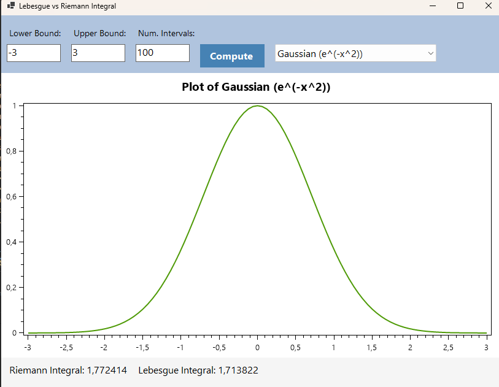
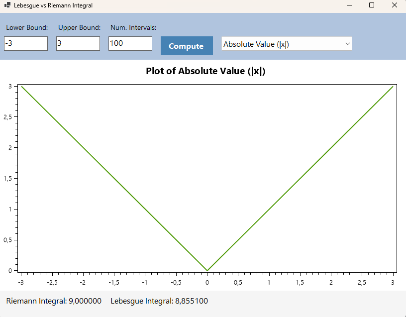
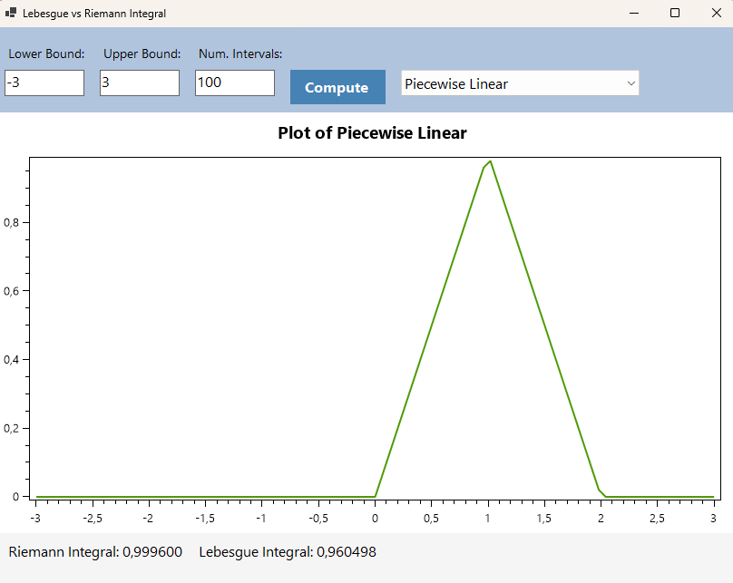
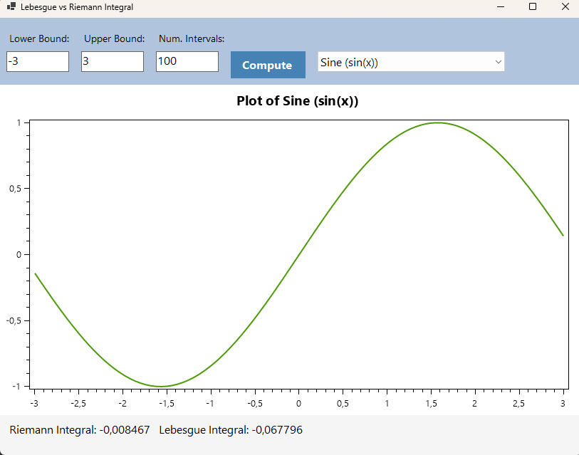
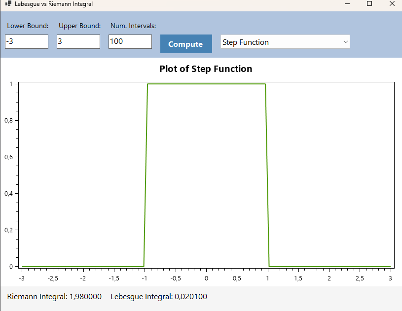

<!DOCTYPE html>
<html lang="en">

<head>
    <meta charset="UTF-8">
    <meta name="viewport" content="width=device-width, initial-scale=1.0">
    <title>Understanding Riemann and Lebesgue Integrals</title>

    <script src="https://polyfill.io/v3/polyfill.min.js?features=es6"></script>
    <script type="text/javascript" id="MathJax-script" async
        src="https://cdnjs.cloudflare.com/ajax/libs/mathjax/2.7.7/MathJax.js?config=TeX-MML-AM_CHTML"></script>
    <link rel="stylesheet" href="https://stackpath.bootstrapcdn.com/bootstrap/4.5.2/css/bootstrap.min.css">
    <link rel="stylesheet" href="https://cdnjs.cloudflare.com/ajax/libs/font-awesome/5.15.3/css/all.min.css">
    <link rel="stylesheet" type="text/css" href="button-styles.css">

    <style>
        body {
            background-color: #121212;
            color: #ffffff;
            font-family: Arial, sans-serif;
            line-height: 1.8;
            font-size: 18px;
        }

        h1, h2, h3 {
            color: #007bff;
            font-size: 36px;
        }

        .container-custom {
            margin-top: 40px;
        }

        .carousel img {
            max-height: 600px;
            width: 100%;
            object-fit: contain;
        }

        .card {
            border-radius: 15px;
            background-color: #343a40;
            transition: transform 0.3s ease, box-shadow 0.3s ease;
            margin-bottom: 40px;
        }

        .card:hover {
            transform: translateY(-10px);
            box-shadow: 0px 10px 20px rgba(0, 0, 0, 0.1);
        }

        .card-header {
            background-color: #444;
            border-radius: 15px 15px 0 0;
            color: #ffffff;
            font-weight: bold;
            font-size: 20px;
        }

        .card-body pre {
            background-color: #2c2f34;
            padding: 15px;
            border-radius: 8px;
            font-size: 18px;
            color: white;
            white-space: pre-wrap;
            word-wrap: break-word;
            display: none;
        }

        .btn-custom {
            background-color: #007bff;
            color: white;
            font-weight: bold;
            border-radius: 50px;
            transition: background-color 0.3s, transform 0.3s;
        }

        .btn-custom:hover {
            background-color: #0056b3;
            transform: translateY(-3px);
        }

        .home-btn, .optional-btn {
            display: inline-flex;
            align-items: center;
            padding: 10px 20px;
            margin-top: 20px;
            border: 2px solid transparent;
            border-radius: 25px;
            background-color: #007bff;
            color: white;
            text-decoration: none;
            transition: background-color 0.3s, border 0.3s;
            cursor: pointer;
        }

        .home-btn:hover, .optional-btn:hover {
            background-color: transparent;
            border: 2px solid #007bff;
            color: #007bff;
        }

        .home-btn i, .optional-btn i {
            margin-right: 0;
        }

        .home-btn:hover i, .optional-btn:hover i {
            color: #007bff;
        }

        .button-container {
            display: flex;
            justify-content: space-between;
            align-items: center;
        }

         .card-header {
            background-color: #444;
            border-radius: 15px 15px 0 0;
            color: #ffffff;
            font-weight: bold;
            font-size: 18px;
        }

        .card-body {
            background-color: #1d1f1f;
            padding: 20px;
            border-radius: 0 0 15px 15px;
        }

        .card-footer {
            background-color: #444;
            text-align: center;
            border-radius: 0 0 15px 15px;
        }

     

    </style>
</head>

<body>
    <div class="container">
        <!-- Button container for Go to Home and Go to Optional buttons -->
        <div class="button-container">
            <button id="backHomeBtn" class="btn home-btn">
                <i class="fas fa-home"></i> Back to Home
            </button>
            
            <button id="goToOptionalBtn" class="btn optional-btn">
                <i class="fas fa-cogs"></i> Go to Optional
            </button>
        </div>
    </div>
    <script>
        document.getElementById('backHomeBtn').addEventListener('click', function() {
            window.location.href = 'index.html'; // Change 'index.html' to your homepage URL
        });

        document.getElementById('goToOptionalBtn').addEventListener('click', function() {
            window.location.href = 'optionalhw10.html'; // Change 'optional.html' to the optional page URL
        });
    </script>


    <!-- Container Descriptive Section -->
    <div class="container container-custom">
        <h1>Understanding Riemann and Lebesgue Integrals</h1>
       <p style="font-size: 18px;">
    The Riemann and Lebesgue integrals are two fundamental approaches to defining the integral of a function, 
    each with distinct methods of evaluating areas under curves. While the Riemann integral approximates the area 
    by summing up the areas of rectangles, the Lebesgue integral takes into account the distribution of function 
    values across the entire domain.
    </p>

    </div>

    <!-- Carousel Section -->
    <div class="container container-custom">
        <div id="functionCarousel" class="carousel slide" data-ride="carousel">
            <div class="carousel-inner">
                <div class="carousel-item active">
                    
                    <div class="carousel-caption">
                        <h5>Gaussian Distribution</h5>
                    </div>
                </div>
                <div class="carousel-item">
                    
                    <div class="carousel-caption">
                        <h5>Absolute Value Function</h5>
                    </div>
                </div>
                <div class="carousel-item">
                    
                    <div class="carousel-caption">
                        <h5>Step Function</h5>
                    </div>
                </div>
                <div class="carousel-item">
                    
                    <div class="carousel-caption">
                        <h5>Custom Function 1</h5>
                    </div>
                </div>
                <div class="carousel-item">
                    
                    <div class="carousel-caption">
                        <h5>Custom Function 2</h5>
                    </div>
                </div>
            </div>
            <a class="carousel-control-prev" href="#functionCarousel" role="button" data-slide="prev">
                <span class="carousel-control-prev-icon" aria-hidden="true"></span>
                <span class="sr-only">Previous</span>
            </a>
            <a class="carousel-control-next" href="#functionCarousel" role="button" data-slide="next">
                <span class="carousel-control-next-icon" aria-hidden="true"></span>
                <span class="sr-only">Next</span>
            </a>
        </div>
    </div>

    <!-- Cards Section -->
    <div class="container container-custom">

        <!-- Card 1: Riemann Integral -->
        <div class="card">
            <div class="card-header">
                <i class="fas fa-calculator"></i> Riemann Integral
            </div>
            <div class="card-body">
                <p>
                    The Riemann integral is one of the earliest methods for defining the integral of a function over a specific 
                    interval. It works by approximating the area under the curve by summing up the areas of rectangles. Each rectangle 
                    has a base width corresponding to a small partition of the interval, and the height is determined by the function 
                    value at a specific point within the partition. This method is intuitive and widely used, but it has limitations, 
                    especially when dealing with more complex functions.
                </p>
                <pre>\[I_{\text{Riemann}} = \sum_{i=0}^{n-1} f(a + i \cdot \Delta x) \cdot \Delta x\]</pre>
                <button class="btn btn-custom" onclick="toggleCode('riemann')">Show Code</button>
                <pre id="riemannCode">
private double ComputeRiemannIntegral(Func<double, double> f, double a, double b, int n)
{
    double dx = (b - a) / n;
    double sum = 0;
    for (int i = 0; i < n; i++)
    {
        double x = a + i * dx;
        sum += f(x) * dx;
    }
    return sum;
}
                </pre>
            </div>
        </div>

        <!-- Card 2: Lebesgue Integral -->
        <div class="card">
            <div class="card-header">
                <i class="fas fa-calculator"></i> Lebesgue Integral
            </div>
            <div class="card-body">
                <p>
                    The Lebesgue integral is a more general and sophisticated method for defining the integral of a function. 
                    It approaches the problem by partitioning the range of the function into intervals (also known as "buckets") 
                    and calculating the area of each range's contribution to the total integral. This approach allows Lebesgue integration 
                    to handle a wider class of functions, especially those that may not be well-behaved in the traditional Riemann sense, 
                    such as functions with discontinuities or unbounded behavior.
                </p>
                <pre>\[I_{\text{Lebesgue}} = \sum_{i=0}^{m-1} \left(\text{bucket value} \cdot \text{measure of the bucket}\right)\]</pre>
                <button class="btn btn-custom" onclick="toggleCode('lebesgue')">Show Code</button>
                <pre id="lebesgueCode">
private double ComputeLebesgueIntegral(Func<double, double> f, double a, double b, int n)
{
    double dx = (b - a) / n;
    double[] xValues = Enumerable.Range(0, n).Select(i => a + i * dx).ToArray();
    double[] fValues = xValues.Select(f).ToArray();

    // Discretize the range of f(x) into buckets
    double minValue = fValues.Min();
    double maxValue = fValues.Max();
    int buckets = Math.Min(100, n);
    double bucketWidth = (maxValue - minValue) / buckets;

    double[] measures = new double[buckets];
    for (int i = 0; i < n; i++) {
        int bucketIndex = (int)((fValues[i] - minValue) / bucketWidth);
        if (bucketIndex >= 0 && bucketIndex < buckets)
            measures[bucketIndex] += dx;
    }

    double integral = 0;
    for (int i = 0; i < buckets; i++) {
        double bucketValue = minValue + i * bucketWidth + bucketWidth / 2;
        integral += bucketValue * measures[i];
    }
    return integral;
}
                </pre>
            </div>
        </div>
    </div>

    <script>
        function toggleCode(id) {
            const codeBlock = document.getElementById(`${id}Code`);
            codeBlock.style.display = codeBlock.style.display === 'block' ? 'none' : 'block';
        }
    </script>

    <script src="https://code.jquery.com/jquery-3.5.1.min.js"></script>
    <script src="https://cdn.jsdelivr.net/npm/@popperjs/core@2.11.6/dist/umd/popper.min.js"></script>
    <script src="https://stackpath.bootstrapcdn.com/bootstrap/4.5.2/js/bootstrap.min.js"></script>
</body>

</html>
